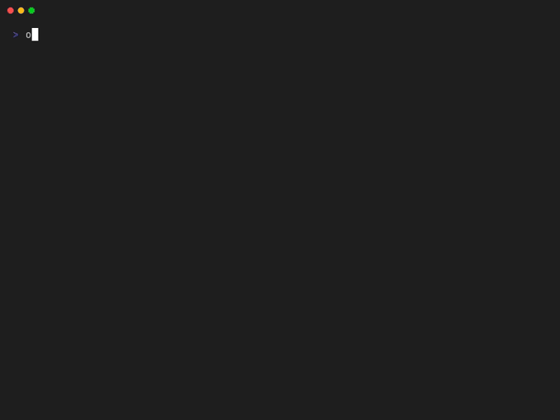

Tutorial
In this tutorial, you will learn how to set up Onzr and the basic philosophy behind it.
Tip
While following this tutorial, you will be invited to type shell commands. Every command appears in a code block as follow:
You can copy or type them in your terminal and type return at the end of the instruction to execute them.
Install Onzr
Requirements
Onzr is a Python package, but it depends on VLC media player to play your music. You need to make sure it's installed on your machine; don't be afraid most (every?) operating systems are compatible.
Python should also be installed in your machine. If
you are using a UNIX-based operating system such as MacOS or GNU/Linux, it
should already be installed. Make sure your version of python is at least
Python 11.0 by typing the following command in your favorite terminal:
Example output may be something like: Python 3.12.8
Install Onzr in your user space
Tip
Make sure pip is installed for your Python version by typing the following
command in a terminal:
This command should not fail and the output may look like:
If pip is not installed, please follow the official
documentation to install it.
We will use the pip package manager to install onzr in your user space:
Use your preferred installation method
In this tutorial, we invite you to install Onzr in your user space, but you can choose to install it globally (for all users), or using another package manager than Pip. It's up to you to choose the most convenient method to install a Python package in your machine.
Once installed, the onzr command can be called from your favorite terminal.
You can test it by typing:
Configure Onzr
A basic configuration file is required to run Onzr. It should be created once
using the dedicated init command.
Tip
Before running this command, we invite you to get your ARL token that will be used to authenticate your requests to the Deezer API. This token value can be found stored in a session cookie once connected to deezer.com using your favorite web browser (see detailed instructions).
When prompted, copy/paste your ARL token and validate by pressing Enter
That's it: Onzr is now configured 🎉 A configuration file (settings.yaml)
should have been generated at the following path (depending on your OS):
- MacOS:
~/Library/Application Support/onzr/settings.yaml - Windows:
%appdata%\watson\config, which usually expands toC:\Users\<user>\AppData\Roaming\onzr\settings.yaml - Linux:
~/.config/onzr/settings.yaml
You can check the configuration path using the config -p command:
And the configuration content using:
You should see at least two defined settings:
Edit your configuration
Feel free to customize Onzr's behavior by changing your settings such as the default audio quality:
Configuration can be edited using the onzr config -e command.
For a complete list of configurable settings and configuration tips, please refer to the configuration documentation.
Run the web server
Onzr has been designed as a web server that streams and plays your music using FastAPI and VLC respectively. It provides an HTTP API to interact with it, e.g. control the player and the tracks queue.
To use Onzr you should run the web server by using the serve command:
If Onzr is properly installed and configured, you should see logs from the web server displayed in your terminal. And as it's running as a foreground process, you will need to start a new terminal to run new commands to act on it.
Tip
If you want to run the Onzr server as a background process, we recommend to lower the log-level so that it won't disturb your terminal flow:
Make sure Onzr server is running by using the state command:
If the server is up and running, you should get a description of the server state. Meaning we can start playing with it and stream our favorite tracks.
Search albums, artists and tracks
Onzr CLI uses Deezer API to explore available music tracks. When beginning with Onzr, the first step is often a search. Let's say you want to explore Radiohead's discography. The first step is to get its artist identifier (ID):
The command output should look like:

The identifier we are interested in for Radiohead is 399. We can then use
this identifier to explore the artist top tracks:
The output should look like:

In this top track list, we can find the track identifiers, title and album.
Pro tip for power users ™
An alternative way to achieve the previous suite of commands is to leverage the
power of UNIX shells by using the pipe operator (| character) that send the
output of a command as input of another command (we say it is "piped" to the
second command):
- Only display identifiers using the
--idsoption - Restrict to the first match using
headcommand - Use the
-special flag so that Onzr expects identifiers coming from the standard input
And if we want the artist discography, we can use the --albums option:
- The
--limitoption is used here to avoid being limited to the 10 latest albums (API default page size it10).
The output should look like:

I hear you from here saying:
— Ok that great, but we are here to listen to music, not get creepy identifiers!
Loud and clear, let's continue to the next section to listen good music!
Add tracks to queue
Onzr queue should be considered as a volatile playlist that you can modify
on-the-fly. You may add tracks to the queue using the add command:
In this case, we've added the track with the 138539157 identifier to the
queue. Since you may not remember Deezer identifier from your favorite tracks,
the add command is often the last command of a more complete pipeline,
e.g.:
onzr search --artist "Radiohead" --ids --first | # (1) \
onzr artist --top --ids - | # (2) \
onzr add - # (3)
- Note that we use the
--idsoption to only display artists identifiers - Note that we use the
--idsoption to only display tracks identifiers - Note that the
addcommand also accepts the-special operator to read identifiers from the standard input (stdint)
In this case, we will add Radiohead's top-10 tracks to the queue. This is a classical pipeline.
Tip
If you want a fresh start and remove all queued tracks, use the clear
command:
Note that this will also stop the player.
Enjoy your music
Once you filled Onzr's queue, you can start playing it!
By default, if the queue has just been filled and left untouched, the play
command will start playing the first track. If the player is paused, it will
resume playing.
If you prefer playing a particular queued track, you can also start playing
from its rank in the queue. To get the list of queued tracks, you can use the
queue command, get the rank of your favorite track and then play it:
The output should look like:

If you want to start playing Jigsaw Falling Into Place use its rank:
Control the player
As you may expect, there are few commands that do what they say to control the player:
pause: toggle pausenext: play next track in queueprevious: play previous track in queuestop: stop the player without clearing the queue
Tip
If you want to follow currenly played tracks in real-time you may use the
now command:
Create playlists on-the-fly
One last thing: the mix command is Onzr's secret sauce! This command can
create playlists on the fly given a list of artists names. Let's see it in
action:
onzr mix "avishai cohen" "go go penguin" "yom" --limit 20 --ids | # (1) \
shuf | # (2) \
shuf | \
onzr add -
- Note that we use quotes for each artist (since they may have spaces or special characters in their names)
- The
shufcommand shuffles standard input lines
With this command we add 60 tracks to the queue (20 tracks per artist) in a
random order. By default, we consider the --limit first artist's top-tracks
(defaults to 10).
So if you want to go deeper and discover artists inspired from the ones you
choose, use the --deep option to get tracks from each artist's radio. There
is a great chance that you discover new sounds:
onzr mix --deep "avishai cohen" "go go penguin" "yom" --limit 20 --ids | \
shuf | \
shuf | \
onzr add -
Tip
The cool thing about this mix --deep command is that if you run it twice,
you won't have the same mix, since artist's radio are randomly created.